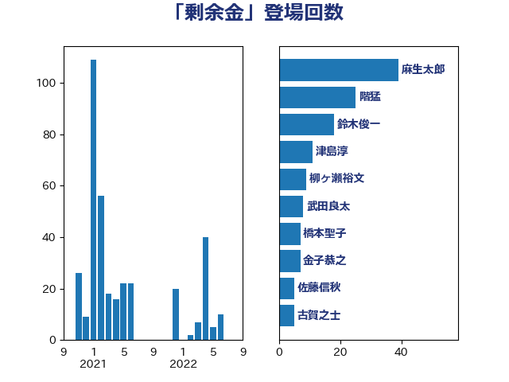

単語「剰余金」

| 麻生太郎 | 自由民主党 | 39 回 |
| 階猛 | 立憲民主党 | 25 回 |
| 鈴木俊一 | 自由民主党 | 18 回 |
| 津島淳 | 自由民主党 | 11 回 |
| 柳ヶ瀬裕文 | 日本維新の会 | 9 回 |
| 武田良太 | 自由民主党 | 8 回 |
| 橋本聖子 | 無所属 | 7 回 |
| 金子恭之 | 自由民主党 | 7 回 |
| 佐藤信秋 | 自由民主党 | 5 回 |
| 古賀之士 | 立憲民主党 | 5 回 |
| 篠原孝 | 立憲民主党 | 5 回 |
| 越智隆雄 | 自由民主党 | 5 回 |
| 伊藤渉 | 公明党 | 4 回 |
| 古賀篤 | 自由民主党 | 4 回 |
| 吉田忠智 | 立憲民主党 | 4 回 |
| 奥野総一郎 | 立憲民主党 | 4 回 |
| 岩渕友 | 日本共産党 | 4 回 |
| 後藤茂之 | 自由民主党 | 4 回 |
| 福田昭夫 | 立憲民主党 | 4 回 |
| 大島敦 | 立憲民主党 | 3 回 |
| 橋本岳 | 自由民主党 | 3 回 |
| 菅義偉 | 自由民主党 | 3 回 |
| 足立康史 | 日本維新の会 | 3 回 |
| 音喜多駿 | 日本維新の会 | 3 回 |
| 伊藤岳 | 日本共産党 | 2 回 |
| 宮本岳志 | 日本共産党 | 2 回 |
| 江田憲司 | 立憲民主党 | 2 回 |
| 石井章 | 日本維新の会 | 2 回 |
| 秋野公造 | 公明党 | 2 回 |
| 西村智奈美 | 立憲民主党 | 2 回 |
| 阿部知子 | 立憲民主党 | 2 回 |
| 上川陽子 | 自由民主党 | 1 回 |
| 上田清司 | 国民民主党 | 1 回 |
| 佐藤啓 | 自由民主党 | 1 回 |
| 國重徹 | 公明党 | 1 回 |
| 山下貴司 | 自由民主党 | 1 回 |
| 山東昭子 | 自由民主党 | 1 回 |
| 岡本あき子 | 立憲民主党 | 1 回 |
| 岡本三成 | 公明党 | 1 回 |
| 根本匠 | 自由民主党 | 1 回 |
| 梶山弘志 | 自由民主党 | 1 回 |
| 櫛渕万里 | れいわ新選組 | 1 回 |
| 武部新 | 自由民主党 | 1 回 |
| 海江田万里 | 立憲民主党 | 1 回 |
| 田村憲久 | 自由民主党 | 1 回 |
| 石橋通宏 | 立憲民主党 | 1 回 |
| 神谷裕 | 立憲民主党 | 1 回 |
| 稲富修二 | 立憲民主党 | 1 回 |
| 竹内譲 | 公明党 | 1 回 |
| 若松謙維 | 公明党 | 1 回 |
| 蓮舫 | 立憲民主党 | 1 回 |
| 西村康稔 | 自由民主党 | 1 回 |
| 金田勝年 | 自由民主党 | 1 回 |
| 鈴木庸介 | 立憲民主党 | 1 回 |
| 長浜博行 | 無所属 | 1 回 |
| 高木毅 | 自由民主党 | 1 回 |